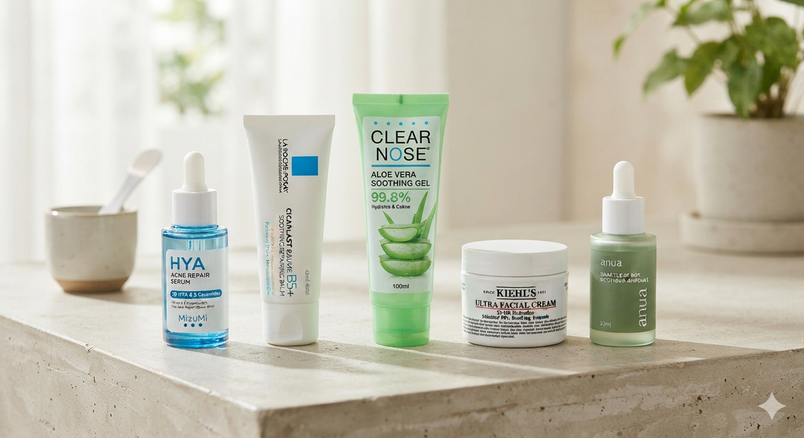

Morning Skin
How does your face feel right after you wake up?
🔘 Dry & Tight: Feels rough or has flaky patches.
🔘 Very Oily: Heavy grease all over the face and cheeks.
🔘 Combination: Oily on the forehead and nose, but dry on the cheeks.
🔘 Normal: Balanced, neither too dry nor too oily.
5 Items to Rescue Damaged Skin

An in-depth, comprehensive review of top-rated skincare routines—handpicked for their proven effectiveness—covering everything from acne-fighting cleansers and hydrating serums to lightweight, oil-control sunscreens. Featuring honest, unsponsored ratings from real users to help you make the best purchasing decisions for your money.
A Deep Dive into Beauty Ingredients
If you new to skincare, dont miss this guide. We explore the science behind popular ingredients—such as Retinol, Niacinamide, AHA/BHA, and Hyaluronic Acid—and cover essential tips on which ingredients shouldn't be combined, as well as the correct order of application for morning and evening routines to ensure maximum effectiveness.